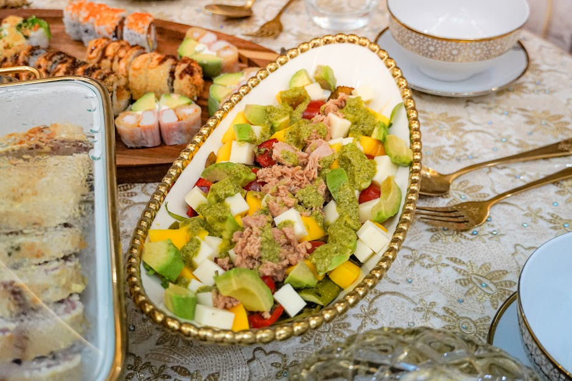

Tuna-Stuffed Avocado

Tuna-Stuffed Avocado delivers 71 g of protein for just 6 g net carbs — zero stove time, ready in minutes. A filling, macro-balanced snack that won't spike your blood sugar.
Ingredients
- 240 g Canned tuna in water (drained)
- 1 Large egg (hard-boiled)
- 1 Avocado
- 50 g Plain 0% Greek yogurt
- 40 g Red onion & celery
- Lemon, Dijon, salt, pepper, to taste
Equipment
- mixing bowl
Method
- Halve and pit the avocado; scoop out a little to make room.
- Mix tuna with chopped egg, Greek yogurt, mustard, lemon, onion and celery.
- Pile the tuna salad into the avocado halves, including the scooped flesh.
Storage & make-ahead
Best assembled fresh. Prep the components up to 2 days ahead, keep chilled, and combine just before eating.
Tip
Avocado provides 10 g of fiber, which is why net carbs stay at ~6 g despite the whole fruit.
Dietary swaps
Dairy-free: Plain 0% Greek yogurt → unsweetened coconut or soy yogurt (for lactose intolerance or a dairy-free diet)
Full nutrition (estimated, per serving): 520 kcal · 71 g protein · 6 g net carbs · 30 g fat (5 g sat) · 10 g fiber · 5 g sugar · 1160 mg sodium. Allergens: Milk, Egg, Fish. Macros are realistic estimates from standard food-composition values; brands and portions vary.
Read the full cookbook — 100 recipes, 3 meal plans & the science →